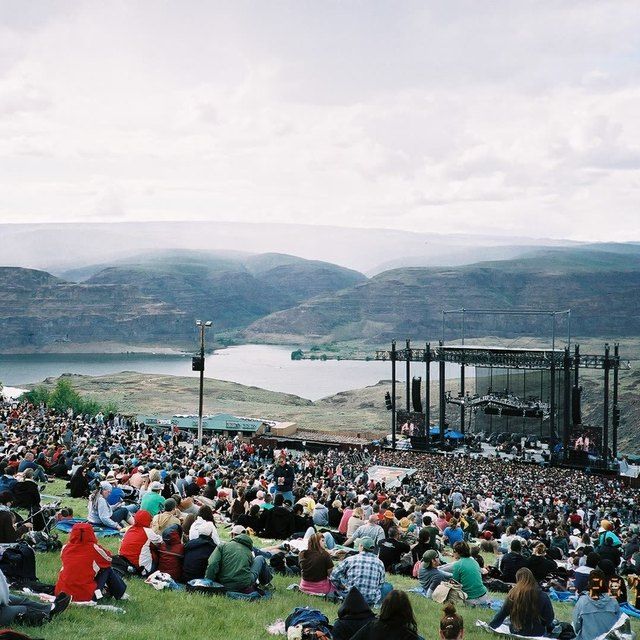

Oh My Darling, Clementine
The Juniper Lane Band
Wayfarers: Live at the Gorge
· 2026
Track 13 of 24
● Live · Aug 30, 2025 · The Gorge
0:00
-0:00
On the stage
Sheet notes
Experimental
Montage
Off
Liner notes
Booklet
Playing from
Wayfarers: Live at the Gorge
· word timing aligned on this PC
Experimental
Up Next
Next · in 0:00
1
2
3
4
5
6
Open the stage again